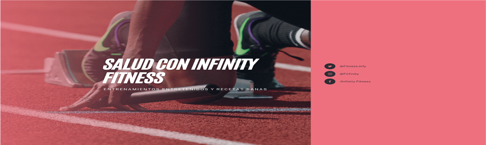

El ejercicio, prácticamente en cualquier forma, puede ayudar a aliviar el estrés. Mantenerte activo puede aumentar los niveles de endorfinas que te hacen sentir bien y distraerte de tus preocupaciones cotidianas.
La falta de ejercicio no solo afecta la salud física, sino que también puede tener un impacto negativo en el estado emocional y mental. La inactividad puede contribuir a la depresión, la ansiedad y otros trastornos mentales. Además, la falta de ejercicio puede llevar a una disminución en la calidad del sueño y un aumento en el estrés. Por lo tanto, es crucial incorporar actividades físicas regulares para mantener un bienestar integral.

La falta de sueño no es solo un inconveniente momentáneo; dormir poco o mal puede tener consecuencias serias para tu salud física y mental. Muchas personas subestiman el impacto que tiene no descansar adecuadamente, pero los efectos de no dormir bien pueden ser visibles desde el primer día e incluso empeorar con el tiempo.
La falta de ejercicio puede tener un impacto significativo en la salud mental y emocional. Aquí hay algunos puntos clave: Reducción de síntomas: El ejercicio regular ayuda a reducir síntomas de ansiedad, depresión y estrés